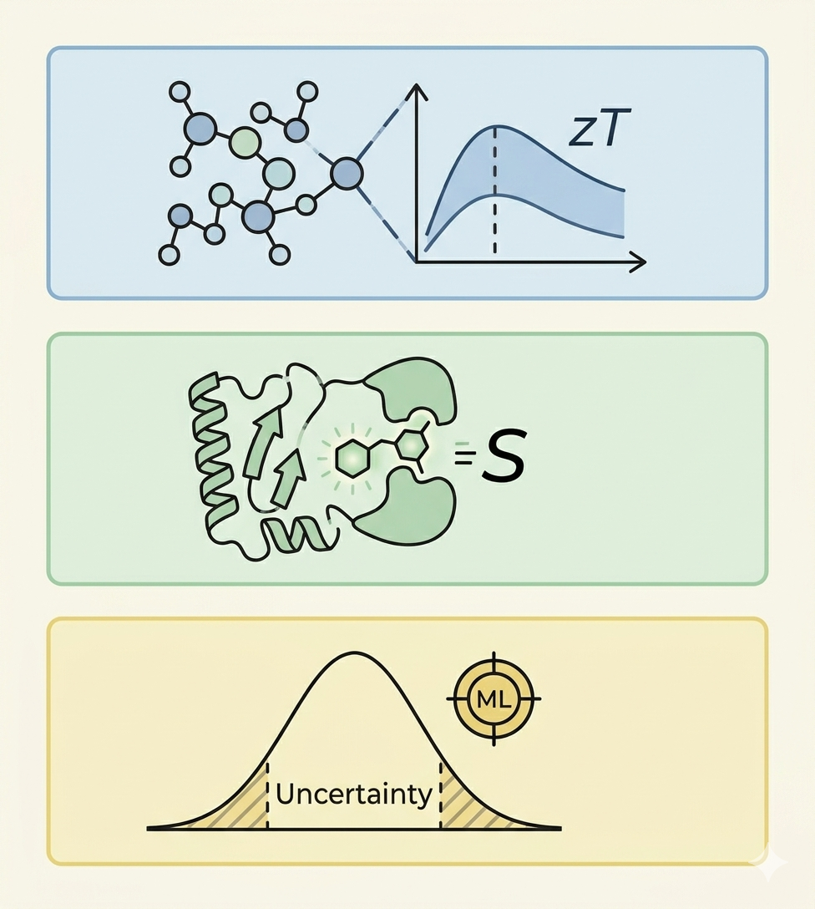

Milad Rayka
Postdoctoral Research Fellow & ML Researcher
About Me
I am a Postdoctoral Research Fellow at Shahid Beheshti University. My research lives at the interface of machine learning and molecular and materials science. I develop machine learning and deep learning pipelines tailored to predict complex properties in chemical, bio, and solid-state systems. Moving forward from a strong foundation in molecular informatics, drug discovery and software development, my current work focuses on expanding into materials informatics to accelerate the discovery of high-performance thermoelectric systems.
Find My Work Online:

Research Focus
Thermoelectric Materials
Applying ML and DL models to accelerate the discovery of high-performance thermoelectric materials, focusing on key transport properties such as Seebeck coefficient, thermal conductivity, and figure of merit (zT). Utilizing active learning to explore high entropy material compositions and curate datasets by identifying and resolving noisy or inconsistent data points.
Drug Discovery and Molecular Informatics
Designing ML and DL geometry-based scoring functions to predict protein-ligand binding affinity. Developing software for streamlined feature vector generation from protein-ligand complexes. Accelerating virtual screening pipelines to identify novel selective human carbonic anhydrase inhibitors. Leveraging ML and DL approaches to enhance enzyme engineering workflows.
Reliability & Uncertainty Quantification
Integrating uncertainty quantification protocols within ML and DL models to enhance reliability, benchmark prediction confidence, and characterize uncertainty in predicted properties across molecular and materials science applications.
Explore codes and other updates: